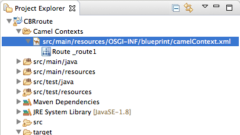

In this tutorial you will:
Run a route as a Local Camel Context (without tests)
Send messages through the route
Examine the messages received by the endpoints
To complete this tutorial you will need the CBRroute project created in To Create a New Route.
To run the route:
Open the CBRroute project you created in Creating the Fuse Integration project.
In Project Explorer, select
CBRroute/Camel Contexts/src/main/resources/OSGi-INF/blueprint/blueprint.xml:Right-click it to open the context menu, then select > .
![[Note]](imagesdb/note.png)
Note If you select instead, the tooling automatically tries to run the routing context against a supplied JUnit test. Because one does not exist, the tooling reverts to running the routing context without tests. In the To Test a Route with JUnit tutorial, you will create a JUnit test case and modify it specifically for testing the CBRroute project.
The Console panel opens to display log messages that reflect the progress of the project's execution. At the beginning, Maven downloads the resources necessary to update the local Maven repository, which may take a few minutes.
Messages similar to the following at the end of the output indicate that the route executed successfully:
... [Blueprint Extender: 3] BlueprintCamelContext INFO Route: _route1 started and consuming from:Endpoint[file://src/data?noop=true] [Blueprint Extender: 3] BlueprintCamelContext INFO Total 1 routes, of which 1 are started. [Blueprint Extender: 1] BlueprintCamelContext INFO Apache Camel 2.18.0.redhat-000015 (CamelContext: ...) started in 0.163 seconds [Blueprint Extender: 3] BlueprintCamelContext INFO Apache Camel 2.18.0.redhat-000015 (CamelContext: ...) started in 0.918 secondsTo shutdown the route, click
 located at the top, right of the Console panel.
located at the top, right of the Console panel.
To verify that the route executed properly:
In Project Explorer, select
CBRroute.Right-click it to open the context menu, then select .
In Project Explorer, locate the folder
target/messages/and expand it:Verify that the
target/messages/othersfolder contains the six message files,message1.xmlthroughmessage6.xml.Double-click
message1.xmlto open it in the editor's Design view, then select the Source tab at the bottom, left of the canvas to see the XML code.Its contents should match that shown in Example 2.
Example 2. Contents of message1.xml
<?xml version="1.0" encoding="UTF-8"?> <order> <customer> <name>Brooklyn Zoo</name> <city>Brooklyn</city> <country>USA</country> </customer> <orderline> <animal>wombat</animal> <quantity>15</quantity> <maxAllowed>25</maxAllowed> </orderline> </order>
To learn more about:
Configuring runtime profiles, see Red Hat JBoss Fuse Tooling: JBoss Fuse Tooling User Guide at https://access.redhat.com/documentation/en-US/Red_Hat_JBoss_Fuse/6.3/html/Tooling_User_Guide/RiderEditRunProfile.html.
Deploying Apache Camel applications see Red Hat JBoss Fuse: Deploying into the Container.